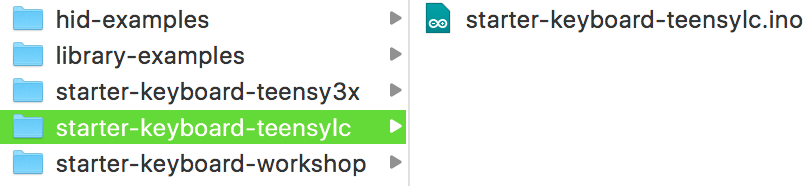

Uploading the Code
Ready to make your Teensy come to life? Great! First, find the code you downloaded in the previous section, sepecifically the alt-ctrl-hid-teensy-master folder (unless you renamed it). If you are using the Teensy LC board then open the starter-keyboard-teensylc folder. If Teensy 3.x then open starter-keyboard-teensy3x. This code will make your Teensy act like a keyboard and make it easier to hook up buttons and joysticks, and even touch inputs!

You should see a file named the same as the folder, but with a .ino extension. You must leave that file in the folder. Arduino requires that the code files (they call them sketches) are always named the same as the folder it in inside.
Nervous yet? Time to put that code on your Teensy!
-
Hopefully you still have the starter-keyboard-teensylc.ino file visible. If not, find it again.
-
Oh, don’t worry about the code for now. You don’t even need to think about changing the code, not until after we have some buttons working!
-
Double-click the file. That should trigger the Arduino software to open (if it warns you about it being an application downloaded from the internet, just click open).
-
Find your Teensy and a micro-USB cable.
-
Plus the small end of the cable into the Teensy, the large end into your computer.
-
With the Arduino IDE in focus, and the start-keyboard-teensylc.ino file open, you are ready to select the appropriate settings to write the code.
-
Click the Tools menu, then hover over Boards, and select Teensy LC. This should stay the default from now on, but if you are ever having problems, it is worth double checking.
-
Click the Tools menu, then hover over USB Type, and select Serial + Keyboard + Mouse + Joystick. This should encompass all of the types of controls we will be emulating over the semesters. Again, this should stay default, but if you have problems, double check the setting.
-
Do you see the check mark in the upper left? And the arrow next to it? If you click the check mark it will try to compile the code and let you know if it is valid. If it isn’t, it’ll spit out some error messages. Clicking the arrow compiles and then tries to put the code on the Teensy.
-
Let’s start with just verifying the code compiles. Click the check mark! It should be since I already wrote and tested it! Watch the console (the bottom black space), and if all goes well you shouldn’t get any errors.
-
If you do get errors, make sure you set the board type properly (step 6) and the USB type properly (step 7).
Whether or not you notice, compiling the could should open a small app called Teensy that looks similar to the below.
This app is your friend! If you aren’t using Arduino to code your Teensy you can feel free to close it, but leave it be if you are using Arduino! If you didn’t run into any errors, you are ready to try putting the code on your Teensy! It might be good to keep an eye on the Teensy app window, as it is the most obvious way to see that programming your Teensy was a success. The following gif is what you should see when it happens.
-
To program your Teensy click the arrow in the upper-left next to the check mark. _(Tip: The arrow also compiles the code before programming, just like clicking the check mark.)
-
If it seems to wait and then prints an error in the console like, "Teensy did not respond to a USB-based request to automatically reboot. Please press the PROGRAM MODE BUTTON on your Teensy to upload your sketch.", try pressing the tiny white button on your Teensy, and click the arrow button again.
-
If it still doesn’t work, make sure the USB cable is properly connected from the computer to the Teensy.
-
Still nothing? Try another cable! They are made cheaply and I’ve lost a lot of time on bad cables in the past!
-
When it does upload to the Teensy, another small application called Teensy might pop open for a moment, or stay open. Don’t worry about this little helper, it is your friend. You can safely close it at any time if you aren’t using the Arduino IDE.
-
If successful, it should say Done Uploading. on the greenish bar above the console (the bottom dark space with text).
Did it work?!? Holy crap! This is huge! Seriously, if you haven’t done much or anything with electronics, getting your environment properly set up to code tiny computers is a big deal! Be proud of yourself because you now have a tiny HID emulator pretending to be a keyboard!